Embodied agents must continually acquire, refine, and reuse a growing
repertoire of skills. The central challenge isn't just learning
skills, it's continually reorganizing and improving them in
dynamic, open-ended environments, without forgetting what came before.
Today's LLM agents represent skills either as flat libraries or static
graphs. Both lack a unified framework for credit assignment and
structural reorganization as new tasks arrive.
Flat library
Skills indexed by similarity. Voyager-style. Cannot compose; new tasks don't decompose into existing skills.
Static graph
Hand-authored library, fixed at design time. ODYSSEY-style (183 skills). No learning, reuses within its fixed repertoire, but cannot grow and adapt to novel tasks.
Evolving network → ours
Skills as programs in a directed graph that continually reorganizes through symbolic updates as the agent learns.
§3 The proposal
What if programs could learn like neural networks?
We've mastered learning in continuous, parameterized systems.
What if we applied the same powerful optimization principles to a
network of discrete, symbolic programs?
Symbolic credit assignment that behaves like backprop
When a multi-skill plan fails, the question isn't which skill was responsible:
backprop doesn't compute one gradient, it computes one per parameter along the
activation path. REFLECT does the symbolic analogue: it propagates failure feedback
recursively along the executed invocation trace, assigning a per-skill diagnostic to
every skill the trace visited.
Two phases.Phase I propagates feedback top-down
(like PyTorch's loss.backward()): for each visited skill, the parent's blame
decomposes into a local edit proposal (gradient) gs plus
child feedback signals {fs'} that flow further down.
Phase II applies the per-skill edit, leaves first
(like optimizer.step()).
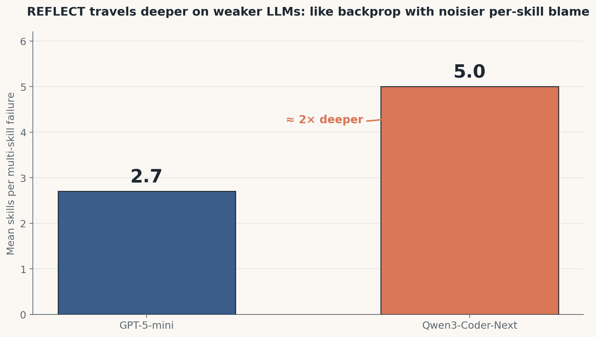
The prediction the analogy makes, and our data confirms.
If REFLECT really is chain-rule-like credit assignment with per-skill gradients, the
propagation depth should scale with how noisy the per-skill diagnosis is. A weaker
code-generator produces noisier per-skill blame, so the recursion travels deeper before
residual feedback drops below noise floor. GPT-5-mini converges in 2.7 reasoning
steps; Qwen3-Coder-Next needs 5.0 (about 2× deeper). A
heuristic-localization framing of REFLECT (one most-visible skill per call) doesn't
predict this scaling. Chain-rule does.
§5 Maturity gating
Adaptive learning rates for skills
Once a skill has converged, additional edit on it can be risky since REFLECT's
gradient is itself noisy (see §7). Downstream failure can
backprop up the call chain and "fix" a working ancestor into breaking. PSN closes
this trap with per-skill update probabilities, a
learning-rate schedule that freezes mature skills while keeping immature
ones plastic.
Each skill carries a reliability score, a smoothed success rate adjusted by how
uncertain we are about it. Mature skills (high reliability) get chosen for update
only rarely; immature ones are updated almost every call.
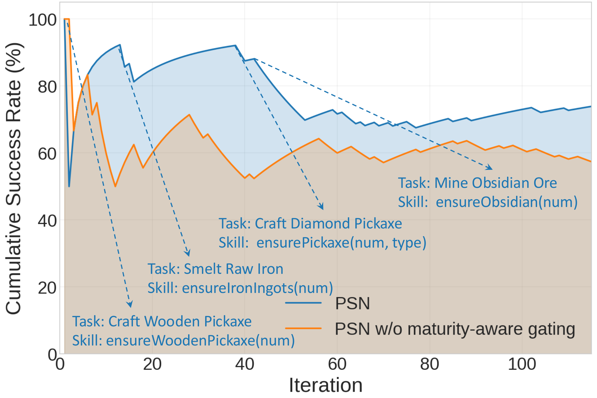
The prediction the analogy makes. If gating freezes converged skills,
removing it should produce cumulative-SR oscillation when downstream failures perturb
mature skills. Without gating (orange), the curve dips when a new harder task arrives.
With gating (blue), mature skills stop receiving updates, the curve climbs and stays
climbed.
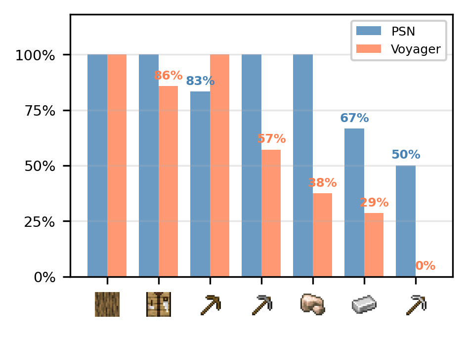
Catastrophic forgetting in flat libraries. Re-evaluated after each
new task, mature skills retain function (50–100%) under PSN; Voyager's flat library
degrades to zero on diamond pickaxe. Stability without sacrificing plasticity.
§6 Online refactor
Symbolic architecture search under a trust region
As the agent learns, the network accumulates redundancies: duplicates,
overlapping coverage, and missing abstractions.
PSN restructures it through five canonical rewrite cases. But a rewrite that looks
safe at the surface (a merge of two seemingly-identical siblings, a parameter
generalization across cases) can silently change behavior, so every proposal
passes through a two-stage safety gate before it touches the network.
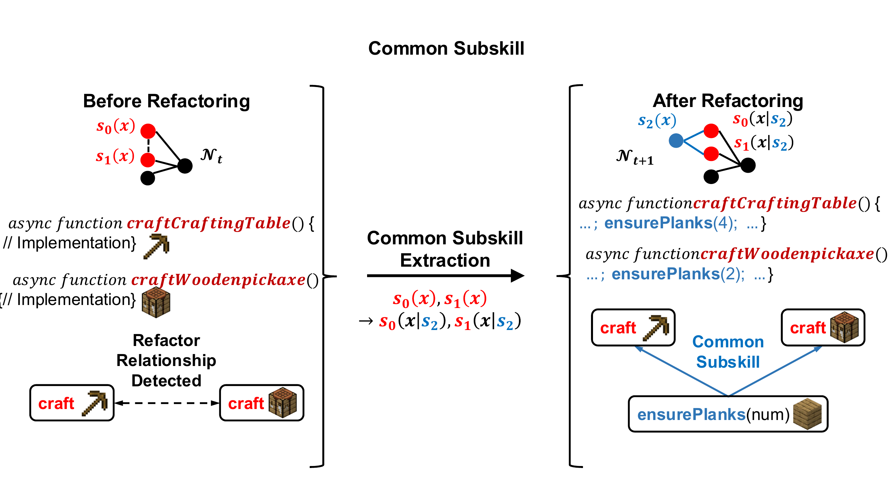
Common subskill extraction
Two skills share an overlapping sub-operation → extract a shared parent skill; both call it. The shared sub-operation is now a reusable building block.
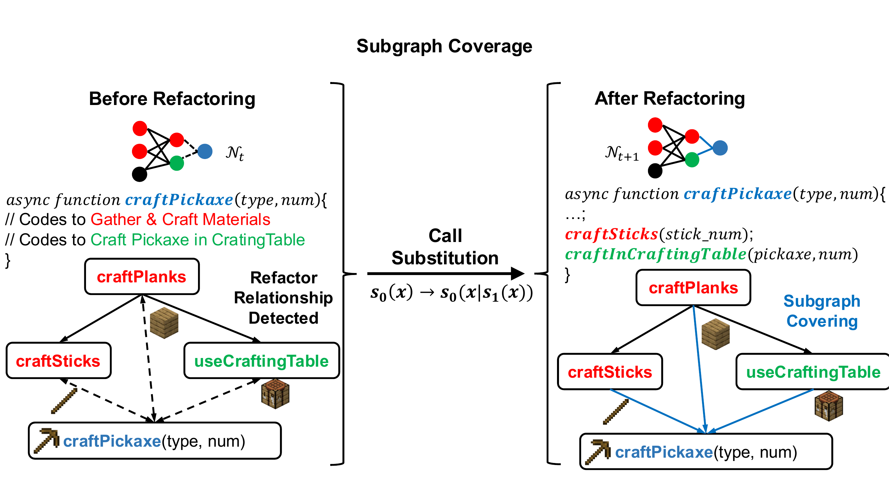
Behavioral coverage
A composite skill duplicates the logic of an existing subskill → rewire to call it. Duplicated blocks are replaced with calls to existing skills.
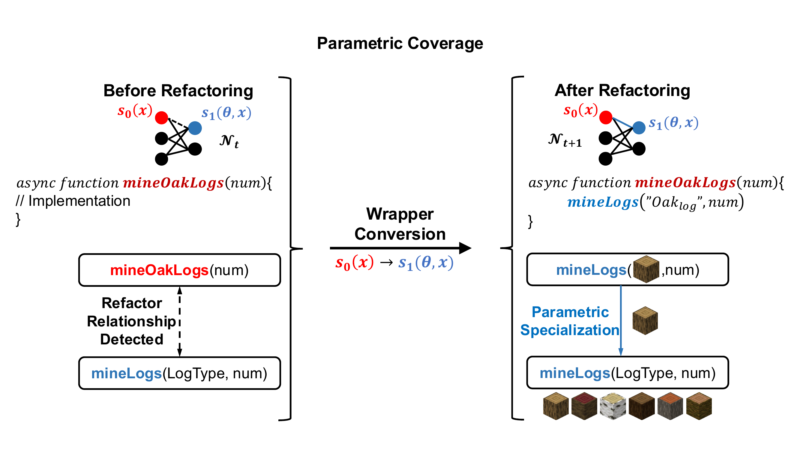
Parametric coverage
One skill is a strict specialization of another (e.g. mineOakLogs(num) ⊂ mineLogs(OAK, num)) → absorb into a parameterized parent.
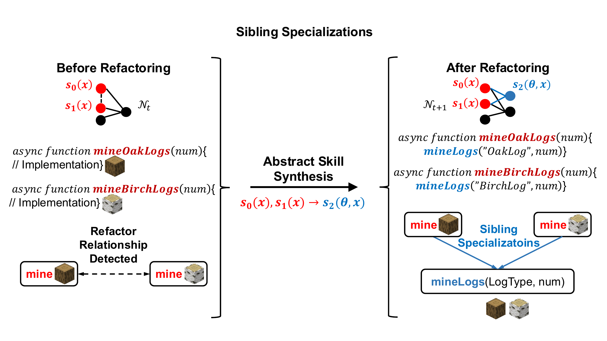
Sibling specializations
Multiple sibling skills imply a missing abstraction → introduce a shared parent and rewrite each sibling as a thin wrapper.
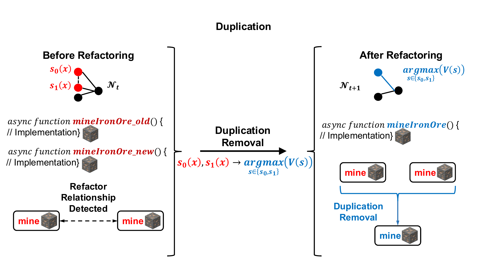
Duplication
Two skills are functionally identical up to naming → canonical merge plus link rewire.
A two-stage trust region
Every refactor proposal flows through two gates:
Stage 1 — Pre-validation. Syntax / type / semantic-preservation checks reject malformed proposals before any refactor is committed. ~28% of refactor proposals are rejected here, before they ever touch the network.
Stage 2 — Post-application rollback. If the refactor degrades the next 3 tasks by more than 20%, the change is reverted via a logged inverse operation.
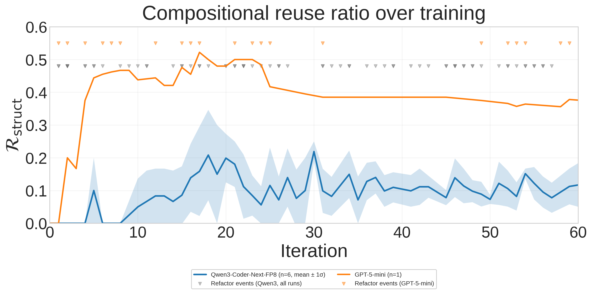
The prediction the analogy makes. If refactor really is the architectural
mechanism, R_struct should rise in stair-stepped jumps after refactor events, not
smoothly.
§7 Harnessing the vulnerability of REFLECT
An LLM-powered gradient is a noisy gradient
Unlike a calculus-defined gradient, REFLECT's gradient is an LLM output: noisy
by construction. The architectural question isn't how to make it noise-free
(it can't be), but how the surrounding system makes REFLECT-driven learning
converge despite that noise.
Why is REFLECT noisy? Three layers.
Knowledge layer
Parametric world-knowledge errors
The LLM's world-knowledge fails in three ways: it may be absent (the fact never made it into the pretraining corpus), un-recalled (the fact is in the weights but the prompt fails to surface it), or hallucinated (the LLM confidently generates a plausible-sounding but false fact).
"raw_iron doesn't exist in vanilla Minecraft — iron_ore drops iron_ingot only after smelting in a furnace." — Qwen3
The raw_iron block has been in vanilla MC since version 1.17 (well before Qwen3's pretraining cutoff). The model has the data but confidently denies it: un-recalled + hallucinated.
PSN's fix: knowledge-augmented REFLECT. A small Minecraft-fact knowledge index is retrieved into Phase I REFLECT's prompt. Verified facts in context bypass all three modes at once: no recall needed, concrete claims to override hallucinations, and missing knowledge supplied. This is a knowledge-side mitigation, not architectural: REFLECT's structure doesn't change, we just feed it better context.
Reasoning layer
Spurious causal attribution
The LLM's causal reasoning fails in three ways: it may anchor on salience (latching onto the most prominent context item as the cause), fabricate plausibility (constructing a coherent-sounding story without grounding it in evidence), or operate from a signal-starved trace (the env didn't surface the actual cause clearly enough to reason from).
"The mined obsidian falls into adjacent lava and is destroyed." — Qwen3, on a tier-mismatch failure where the actual cause was iron_pickaxe ≠ obsidian
Qwen3 anchored on the salient cue (lava) and fabricated a physics-sounding story to bridge the gap: anchor + fabricate + starved trace.
PSN's fix: env-validated iteration. We don't try to make individual REFLECT calls reason correctly. PSN accepts noisy reasoning and relies on the iteration loop: each candidate skill re-executes in real Minecraft, correct optimizations survive the effect check, noisy reasoning gets filtered by the next iteration's fresh env feedback. Reasoning-layer noise tolerance is architectural at the loop level, not at the per-REFLECT level.
Interface layer
Tool / API hallucination
The LLM's code-generation interface fails in three ways: it may fabricate APIs (referencing functions that don't exist), misuse contracts (calling real APIs with wrong argument shapes, e.g., string vs id list, missing required parameters), or mimic surface patterns (copying syntactic patterns from prompt examples without synthesizing actual gameplay logic).
"bot.chat('/give bot diamond 3')" — Qwen3, copied verbatim from a curriculum example instead of synthesizing gameplay
bot.chat is a real API and the call signature is correct, so this is pure surface mimicry from a curriculum example that included the /give chat-command pattern.
PSN's fix: static validation + cleaned context. A static reference checker (Babel parse + symbol resolution) catches fabricated APIs before execution; API-contract docs in the action-agent prompt teach correct call shapes; curriculum prompts are cleaned of cheat-command patterns to remove the mimicry templates. In a production-prompt replay study (n=20), the bug rate dropped from 65% → 35%. The reference-checker is architectural (pre-execution gate); the rest is context shaping.
How does PSN solve each? Two complementary defenses.
Framework-level — env-validated iteration. We accept noise; the
env filters it. The skill update rule is si+1 = si + δsi
where δsi = REFLECT(si, env_feedbacki). Each
si re-executes in real Minecraft; correct optimizations survive
(they pass the effect check), noise is filtered (failed executions feed the next REFLECT),
and the loop converges when si solves the task. Noise tolerance
comes from the iterative loop, not from individual REFLECT calls being trustworthy.
Layer-targeted assists. Where possible, PSN gives REFLECT layer-specific
help so the loop has less work to do: better facts (Knowledge layer, knowledge-augmented
REFLECT), explicit API contracts and cleaned curriculum context (Interface layer, context
shaping), and a pre-execution validation gate for fabricated APIs (Interface layer,
architectural). Reasoning has no skill-structure-level assist, its noise tolerance comes
entirely from the framework-level loop above.
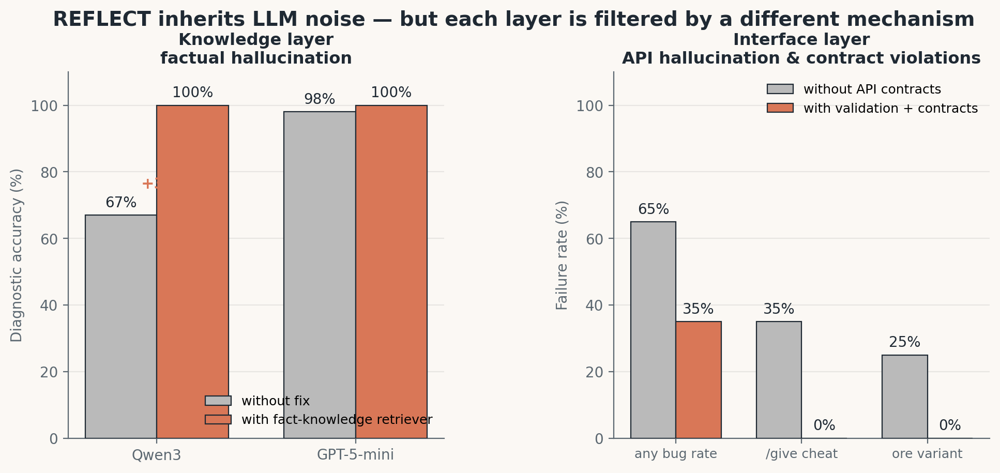
Most striking: Knowledge layer +33pp on Qwen3, only +2pp on
GPT-5-mini: the fix is a weak-LLM corrigendum, not architectural.
Interface-layer validation is architectural and applies across LLMs
(production-prompt replay bug rate 65% → 35%).
§8 Compositional reuse
From primitives to reuse hubs
A skill library that grows but is never reused is a code dump, not a learning
system. Library size matters, but the more telling metric is how many skills get reused.
Rstruct = fraction of skills with fan-in > 1. Rises from 0
(every skill a leaf) toward an asymptote where most skills are reused by multiple
parents. Across 6 Qwen3 runs, Rstruct reaches ≈ 0.094 ± 0.045;
on GPT-5-mini, paper-side runs reach ≈ 0.4.
Three observables consistently point at LLM strength as the underlying axis:
REFLECT depth (2.7 vs 5.0 in §4), hallucination rate
(0% vs 33% in §7), Rstruct asymptote
(0.4 vs 0.094 here). Weaker LLM → noisier REFLECT →
flatter network. The architecture absorbs as much as it can; the rest leaves
a measurable imprint on the topology.
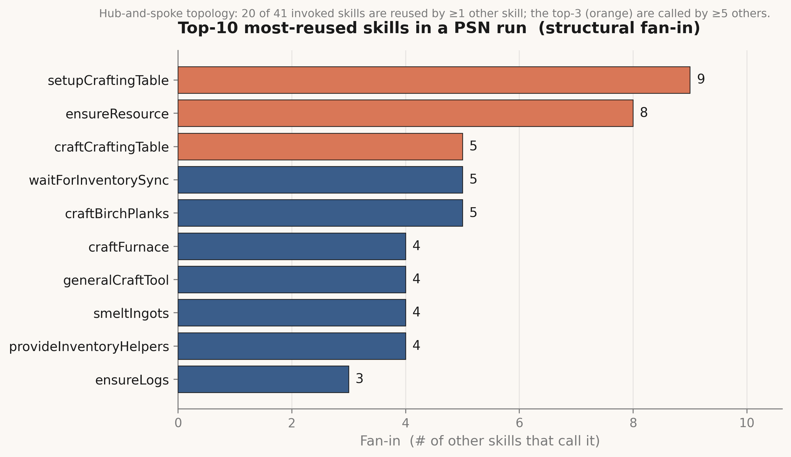
Structural reuse. The run grows a hub-and-spoke
topology: a few setup/utility skills (setupCraftingTable,
ensureResource) become repeat-use hubs depended on by 8–9 other learned
skills. This is the static graph property: how many skills could reuse a
given one.
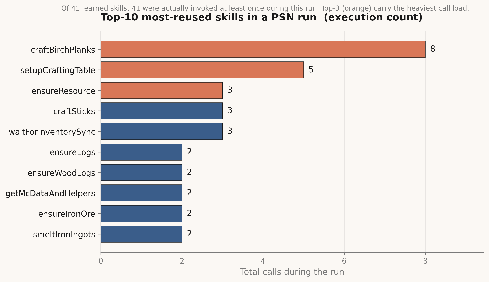
Execution reuse. How often each skill was actually invoked during
the run. Structural reuse and execution reuse don't perfectly align: some
high-fan-in skills are rarely called; some are heavily called even with modest
fan-in. Both views matter: the first is architectural reusability, the second is
operational reuse.
The library landscape — a controlled comparison
PSN's library grows hubs autonomously, even on the same LLM
(Qwen3-Coder-Next-FP8) and the same task curriculum. The chart below shows the
per-run fan-in distribution averaged across 6 paired runs each.
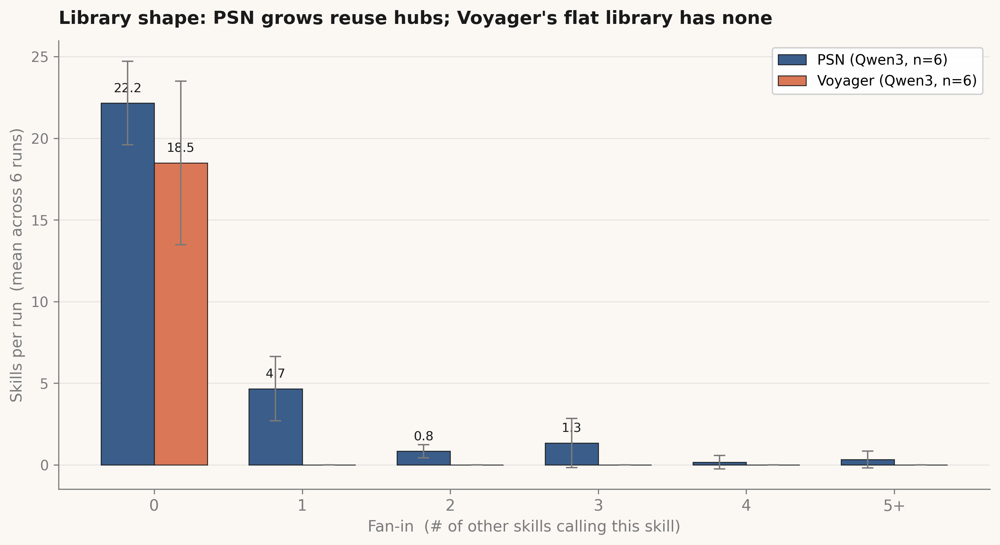
Average per-run distribution of skill fan-in across 6 paired runs each. PSN
consistently produces ~7 skills per run with fan-in ≥ 1 (some reaching
fan-in 3+); Voyager's library has every skill at fan-in 0 by architectural constraint.
§9 End-to-end performance
PSN masters the tech tree faster and more reliably
LLM
GPT-5-mini. PSN unlocks the diamond tools in
32 ± 10 iterations across 6/6 runs;
Voyager 2/6.
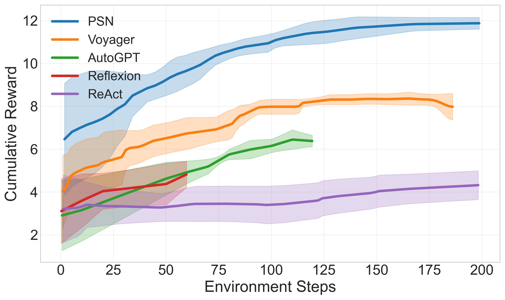
Crafter cumulative reward. PSN sustains higher reward than
Voyager (~12 vs ~8) and dominates planning-only baselines (ReAct, Reflexion).
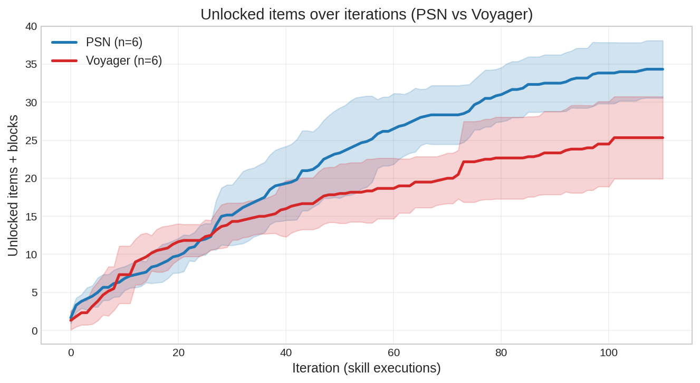
Qwen3-Coder-Next-FP8 (3B active / 80B total MoE, 6×6 evaluation).
PSN reaches the diamond tools in 44 ± 13 iterations
across 6/6 runs; Voyager 1/6.
Skill retention. PSN preserves earlier skills near 100%; Voyager's
flat library decays from 86% to 0% across the tech tree.
§10
Explore a learned skill network
A real PSN run on GPT-5-mini. Each node is a JavaScript skill; edges are
parent → child reuse links; node color encodes norm V.
Low-norm-V nodes are skills whose uncertainty term still exceeds estimated
success, i.e., legitimate plastic skills. Click any node for code,
optimization history, preconditions, and effects.